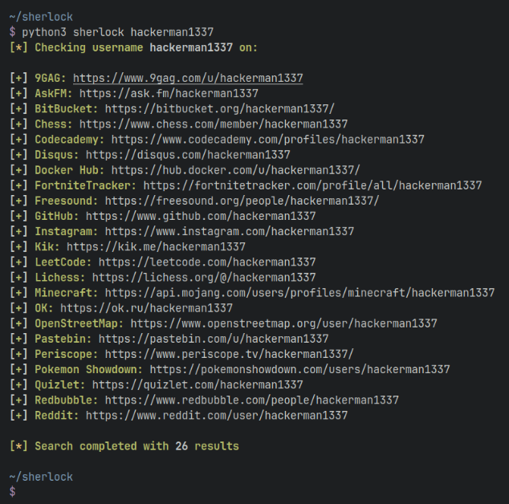

OSINT (Open Source Intelligence) je zbiranje, analiza in interpretacija informacij, ki so javno dostopne.
Gre za uporabo odprtih virov, kot so spletne strani, družbena omrežja, javni registri, novice in drugi javno
objavljeni viri, za pridobivanje informacij o določeni osebi, organizaciji, dogodku ali kateri koli drugi temi.
OSINT je pomemben element pri obveščevalnem delu, varnostnih analizah, preiskavah, raziskavah in drugih področjih,
kjer je potrebno zbiranje in analiza informacij iz različnih virov. Z uporabo OSINT-a se lahko pridobijo pomembni
vpogledi, podatki in obvestila, ki pomagajo pri sprejemanju informiranih odločitev in razumevanju okolja, v katerem
delujemo.
Instagram
Instagram je detektivov najboljši prijatelj zaradi vsega kar ljudje objavljajo o zasebnem življenju. Uporaba OSINT-a
v povezavi z Instagramom se nanaša na zbiranje in analizo informacij, ki so javno dostopne preko te družbene omrežne
platforme. Z uporabo OSINT orodij in tehnik se lahko pridobijo informacije o uporabnikih Instagrama, kot so javno
objavljene fotografije, videoposnetki, lokacije, oznake, komentarji in sledilci. S pomočjo teh podatkov lahko pridobimo
vpogled v interese, dejavnosti, povezave in obnašanje uporabnikov. To lahko ima različne uporabe, vključno z varnostnimi
preiskavami, forenziko, marketinškimi raziskavami ali iskanjem informacij za zasebne ali poslovne namene. Pomembno je,
da se pri uporabi OSINT-a na Instagramu spoštujejo pravila platforme in zasebnost uporabnikov ter se uporabljajo podatki,
ki so javno dostopni.
Sherlock
Sherlock je orodje za OSINT (Open Source Intelligence), napisano v Pythonu.

Omogoča iskanje prisotnosti uporabniškega
imena na več kot 25 različnih spletnih platformah, kot so družbena omrežja, forumi, blogi in drugi javno dostopni viri.
Uporabniku omogoča hitro preverjanje, ali je določeno uporabniško ime že uporabljeno na teh platformah, kar je koristno
pri zbiranju informacij in sledenju aktivnosti določenega profila. Sherlock avtomatizira postopek iskanja na več platformah
hkrati in prikaže rezultate, kar olajša analizo in zbiranje informacij. Zaradi svoje preproste uporabe in prilagodljivosti je
Sherlock priljubljeno orodje med tistimi, ki se ukvarjajo z OSINT-om in digitalno forenziko.